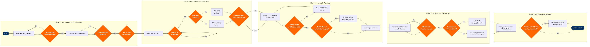

| Step | L4 Step Name | KPI / Target | Pain Point / Risk | Gate |
|---|---|---|---|---|
| 1.1 | Evaluate OTA partnership opportunities | OTA channel revenue contribution ≥25% of total passenger revenue | OTA market consolidation (Expedia/Booking.com duopoly) limits airline negotiating leverage on commission rates and parity terms | |
| 1.2 | Negotiate OTA commercial agreement terms | Commission rate negotiated ≤12% of ticket value; override incentive thresholds agreed within 45 days | OTAs demand last-look pricing rights and rate parity clauses that directly conflict with airline direct channel strategy and dynamic pricing | ⚠ |
| 1.3 | Execute OTA distribution agreement | Contract execution cycle ≤45 days from term sheet agreement | Jurisdictional complexity across markets (EU Package Travel Directive 2015/2302, US DOT full-fare advertising rule 14 CFR Part 399) extends legal review and requires market-specific agreement variants | ⚠ |
| 1.4 | Configure OTA technical connectivity | API connectivity test pass rate 100% before go-live; integration delivery ≤30 days | OTA NDC adoption remains below 40% industry-wide; most connections still use legacy GDS EDIFACT, limiting ancillary upsell capability and real-time inventory access | ⚠ |
| 2.1 | File fares and fare rules to ATPCO | Fare filing lead time ≥72h before sale date per ATPCO SOTI schedule; filing error rate ≤0.1% | ATPCO filing windows create pricing latency vs. direct channel dynamic pricing; competitors using NDC bypass ATPCO for OTA-specific private offers, gaining speed-to-market advantage | |
| 2.2 | Configure OTA channel fare availability in PSS | Fare availability accuracy ≥99.5% vs. ATPCO published fares; inventory update latency ≤15 minutes | Altéa inventory caching can lag up to 15 minutes on high-demand routes during peak booking windows, causing OTA booking failures, GDS error messages, and lost revenue on price-sensitive leisure routes | ⚠ |
| 2.3 | Distribute ancillary content to OTA channels | Ancillary attach rate via OTA ≥18% of bookings; NDC ancillary revenue per booking ≥$22 | Non-NDC OTAs cannot render structured ancillary offers; EDIFACT-connected OTAs display ancillaries as free-text remarks only, reducing attach rate to <5% and suppressing ancillary revenue on high-volume OTA channels | ⚠ |
| 2.4 | Monitor OTA content parity compliance | Price parity violations ≤0.5% of sampled OTA fares per weekly audit cycle | OTAs apply opaque loyalty discounts, packaging, and credit card rewards to undercut direct channel pricing, remaining technically parity-compliant while effectively bypassing parity agreements and eroding direct channel value proposition | ⚠ |
| 3.1 | Process OTA-originated bookings in PSS | OTA booking acceptance rate ≥99.8%; booking confirmation latency ≤3 seconds via GDS, ≤1.5 seconds via NDC | GDS booking surcharge of $3–$7 per segment raises airline cost of distribution vs. direct channel; carriers absorb cost to maintain OTA relationship but margin erodes on low-yield leisure itineraries | |
| 3.2 | Validate OTA ticket issuance and EMD generation | Ticket issuance within BSP ticketing time limit 100%; EMD issuance error rate ≤0.2% | OTA back-office systems frequently breach ticketing time limits due to payment processing delays, triggering automatic PNR cancellation in Altéa without customer notification — generating rebooking costs, customer complaints, and CSAT impact | ⚠ |
| 3.3 | Handle OTA booking modifications and cancellations | OTA modification fulfilment rate ≥98%; refund processing ≤5 business days per IATA Resolution 824 | Non-NDC OTAs cannot submit structured order changes via API; refund workflows are manual when OTA uses EDIFACT, creating backlogs of 10,000+ cases during irregular operations (IROPS) events such as severe weather or ATC strikes | ⚠ |
| 4.1 | Reconcile OTA bookings against flown revenue | Reconciliation completion within 3 business days of month close; revenue variance ≤0.1% of OTA channel revenue | OTA booking data arrives in multiple formats — BSP XML, ARC ACH files, and direct NDC API logs — requiring manual transformation and mapping before SAP ingestion, extending the month-close cycle by 1–2 days | |
| 4.2 | Process BSP/ARC settlement for OTA bookings | BSP settlement on-time rate 100%; settlement discrepancy rate ≤0.05% of billed amount | OTA agents with multiple IATA numbers split bookings across sub-entities to stay below BSP credit limits, creating reconciliation gaps, default risk exposure, and triggering IATA credit management review processes | ⚠ |
| 4.3 | Audit and pay OTA commission and override incentives | Commission payment accuracy ≥99.9%; override incentive payment within 30 days of quarter close | Manual commission calculation for multi-tier OTA override structures (base + volume override + market development funds) is error-prone; disputes with large OTAs (Expedia, Booking.com) over override eligibility can delay payments 60+ days and damage commercial relationships | ⚠ |
| 5.1 | Analyse OTA channel performance vs. targets | OTA revenue contribution vs. plan ±5%; cost of distribution per ticket ≤$15 including GDS fees and commissions | OTA data-sharing agreements vary significantly — major OTAs withhold passenger-level booking data citing GDPR and commercial confidentiality, preventing complete channel profitability analysis and obscuring true margin contribution by OTA partner | |
| 5.2 | Review OTA contract performance and renewal decision | OTA contracts reviewed annually; renewal or renegotiation decision finalised ≥90 days before expiry date | Bilateral OTA contracts frequently lack performance clawback provisions; underperforming OTAs retain preferred commission rates and override eligibility without meeting volume commitments, reducing airline's ability to redirect inventory to higher-yield channels | ⚠ |